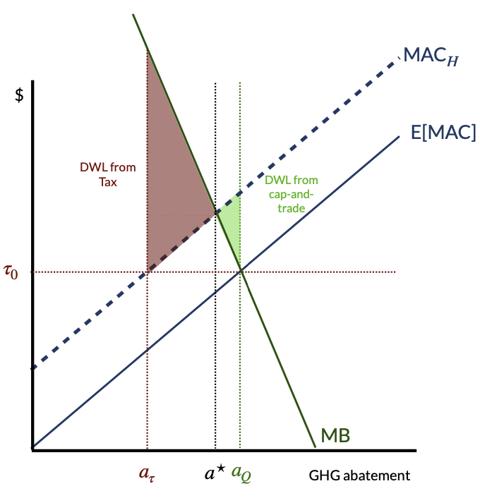

2.1 – how would an economist solve climate change?
overview
Climate change is a “missing markets” problem. Reducing GHG emissions provides benefits to society, but there is no formal mechanism to generate demand for emissions. But, we can model climate policies as if they operate as a demand curve for emissions reductions or GHG abatement.
Economists tend to prefer market-based solutions for reducing GHGs. Two primary market-based solutions are carbon taxes and cap-and-trade systems. Both of these solutions are based on the idea of putting a price on carbon emissions. The idea is that if we put a price on carbon emissions, then firms will emit less carbon. This is because emitting carbon will become more expensive, and people will demand less of carbon-intensive goods and services and firms will be less interested in producing them.
To understand how to compare different policies that reducing GHG emissions, it is helpful to remind ourselves what it is we’re trying to do. We want to maximize the net benefits of GHG abatment, which involves balancing the benefits of GHG abatement (i.e., reducing climate change) with the costs of abatement. Net benefits are maximized when the marginal benefits of abatement equal the marginal costs of abatement. This is what we refer to as the socially optimal, or “efficient,” level of GHG abatement.
Policies to reduce GHG emissions attempt to do so at least cost. Imagine we know what level of GHG emissions we want to achieve—perhaps this is getting to “net zero” emissions or reducing emissions enough to keep us on track to meet agreements laid out in the Paris Accord. There are potentially many ways to reduce emissions to that level, but we want to find a way to reduce emissions in the least costly way to society. As a result, we often end up comparing and contrasting different policies to reduce emissions in terms of their costs of achieving a given emissions reduction.
marginal abatement costs
Because comparing policies reduces to comparing costs, it is useful for us to revisit the marginal abatement cost curve. Marginal abatement costs (MACs) are the costs of reducing each additional emission of a pollutant. MACs reflect the minimum cost of achieving each unit of abatement (i.e., you always want to reduce the cheapest GHGs first). Think of switching from incandescent to LED lightbulbs, this technological switch is actually negative cost because the efficiency improvement pays for itself. As we move “up” the MAC curve, we are reducing GHG emissions at an increasing cost. Building a new nuclear power plant to offset coal might reduce emissions, but does so at a very high incremental cost.
We can plot MACs either in terms of abatement or emissions. If we plot MAC curves in terms of abatement, we can think of the MAC curve as the supply curve for GHG abatement, which is upward sloping. If we plot MAC curves in terms of emissions, we can think of the MAC curve as the demand curve for GHG emissions, which is downward sloping.
command-and-control policies
There are two primary types of policies to reduce GHG emissions: “Command-and-control” policies and market-based policies. Command-and-control policies are regulations that require firms to reduce emissions by a certain amount. Market-based policies are policies that create incentives for firms to reduce emissions.
Two types of command-and-control policies are performance standards and technology standards.
performance standards
For performance standards, the regulator (often the government) sets the amount GHG pollution that is allowed from each firm. A useful example is when the regulator sets the total emissions cap and then allows each firm to emit equal amounts. This is called a uniform performance standard (e.g., if there are \(N\) regulated firms and the regulator chooses an emissions cap of \(\bar{E}\), then each firm would be allowed to emit no more than \(\bar{E}/N\).) In general, emissions standards are relatively easy to implement and monitor: the regulator only needs to choose an emissions level and require firms to report their emissions, which can be enforced via penalities if firms violate the standard. Because the regulator typically does not observe marginal abatement costs for each firm (or in aggregate), they have to set emissions caps with imperfect information. In general, this results in reducing industry-wide emissions in a costlier manner than alternative market-based based policies.
technology standards
For technology standards, the regulator chooses the technology that a firm must use to reduce GHG emissions. With technology standards, rather than choosing an emissions level, the regulator might mandate all firms to use the “best available” technology. This policy might help some under-performing firms with information asymmetry, but it might also increase costs for some firms. In general, technology standards could be more or less costly than performance standards in meeting a given emissions target.
market-based policies
Command-and-control policies are generally inefficient (or more costly) because they are fairly blunt tools for reducing emissions. Often, command-and-control policies Market-based policies can be more efficient because they create incentives for firms to reduce emissions in the least costly way. There are two primary types of market-based policies: taxes and cap-and-trade programs.
corrective taxes
Corrective, or “Pigouvian,” taxes are taxes on the production or consumption of a good that generates negative externalities. Corrective taxes are designed to internalize the external costs of production or consumption. In the case of GHG emissions, a corrective tax is often referred to as a carbon tax.
Carbon taxes punish bad behavior, similar to a “swear jar.” For an absolutely fantastic discussion of how carbon taxes work within this analogy, check out this video by University of Michigan professor Catherine Hausman:
The idea behind a carbon tax is straightforward. We want to reduce GHG emissions, so we tax goods that generate GHG emissions. This tax increases the marginal cost of those goods that generate GHG externalities, which shifts the supply curve up by the amount of the tax. This results in a new equilibrium level of consumption and production, which is lower than the original level in the private market equilibrium. The tax level is set equal to the marginal external damages that are generated by the polluting good, which then internalizes the external cost and achieves the socially optimal level of production. This is the level of production and consumption that maximizes net benefits.
Consider Figure 1, which shows an example carbon tax in the market for gasoline. The supply curve reflects the marginal cost of producing gasoline. If suppliers of gasoline do not have to account for the externalities that arise from burning gasoline, they will sell 500 gallons/year at a price of $3.50/gallon. Burning gasoline emits GHGs, which impose costs on society via climate change. For each gallon of gasoline consumed, assume the external costs are $2/gallon.1 We can add this marginal damage to the supply curve to get the social marginal cost curve. The socially optimal amount of gasoline consumption/production occurs at the intersection of the demand curve and the marginal social cost curve. In order to achieve this level of consumption, the government can implement a tax of $2/gallon. This tax will increase the marginal cost of gasoline production by $2/gallon. This will result in a new equilibrium level of consumption of 400 gallons/year at a price (to consumers) of $5/gallon. Producers, on the other hand, will only receive $3/gallon for each gallon sold.
But, if consumers pay $5/gallon and producers receive $3/gallon, where did the other $2/gallon go? This amount is the per-gallon tax revenue the government receives. In this example, consumers’s tax burden ($5.00 - $3.50) \(\times\) 400 = $600, whereas the producers’ tax burden is ($3.50 - $3.00) \(\times\) 400 = $200. The total tax burden is $800, which is the area of the shaded rectangle in Figure 1. This tax burden is the total amount of tax revenue the government receives. The amount of the tax that consumers/producers pay depends on the relative slopes of the demand and supply curves. With very elastic demand, consumers can shift consumption to close substitute goods, which means that producers will bear most of the tax burden. With very inelastic demand, consumers cannot shift consumption to close substitute goods, which means that consumers will bear most of the tax burden.
Taxes also generate deadweight loss, which is shaded in gray in Figure 1. This area reflects lost consumer and producer surplus in the market. This DWL is not necessarily a bad thing. It reflects the fact that we are reducing consumption of a good that generates negative externalities. In setting the tax, we’ve eliminated the DWL that would have resulted from overconsumption of gasoline (not shown in the figure).
The key point with carbon taxes is that they force consumers and producers to internalize the external costs of GHG emissions. Moreover, taxes generate revenue. The government can use that revenue to reduce other taxes, invest in clean energy, or provide other public goods. One major concern about the political viability of carbon taxes is that they increase the cost of carbon-intensive goods and services (imagine paying $1.50 more for each gallon of gasoline). This is a legitimate concern, but governments can use that tax revenue to mitigate distributional concerns. For example, the government could rebate all of the carbon tax revenue back to households.
cost-effectiveness of carbon taxes
Taxes can achieve emissions reductions at a lower cost than alternative policies. To see this, consider two firms (A and B) facing a GHG price \(\tau^\star\) in Figure 2. In this figure, the width of the horizontal axis is fixed at the total level of emissions reductions needed in the the market (comprised of only the two firms). So, if we operate all the way on the left, then firm A produces all of the GHG abatement. If we operate all the way on the right, then firm B produces all of the GHG abatement. If we operate somewhere in the middle, then both firms produce some level of the required GHG abatement. When a tax on GHG emissions is set, each firm is going to abate GHG emissions up to the point where the tax equals their MAC curve.
In Figure 2, firm B abates relatively more emissions than firm A, because they have a lower MAC curve. That is, Firm B can abate emissions more cheaply, so they contribute more overall abatement. From a societal perspective, this is a good thing: we want emissions to be reduced in the cheapest way possible. To calculate the overall cost of emissions reductions under the tax, we would calculate the area underneath each MAC curve up to the point of abatement.
examples of carbon taxes
cap-and-trade programs
Cap-and-trade programs are market-based policies that set a limit (or, “cap”) on the total amount of GHG emissions that are allowed to be produced. The regulator then issues a number of permits that are equal to the cap. One permit gives firms the right to emit one ton of GHGs. The government then distributes the allowances to permits (either freely or through an auction). Firms can then trade allowances with each other. Firms that can reduce emissions at a low cost can sell their allowances to firms that cannot reduce emissions at a low cost. This creates a market for GHG emissions. The price of allowances is determined by the supply and demand for allowances. The government can set the cap at a level that achieves the socially optimal level of emissions, and then firms can trade allowances so that the emissions reduction is met at least cost.

In Figure 3, imagine that the regulator freely allocates an equal number of permits to each firm (represented by point \(a_0\)). At this level of abatement, firm B has MAC = \(p^B\) and firm A has MAC = \(p^A\), where \(p^A > p^B\). Because the marginal cost of abating one more ton of GHGs is cheaper for firm B than it is for firm A, firm A should be willing to purchase a permit from firm B rather than abating their last unit of GHGs. Once this transaction occurs, then the process repeats itself until the marginal cost of abatement is equalized across firms. The firms will trade until they reach point \(a^\star\), which is the socially optimal level of abatement. The price of permits is equal to the marginal cost of abatement for both firms. Notably, the equilibrium permit price is identical to the carbon tax that would achieve the same level of abatement. The cost of acheiving the emissions reductions is minimized, just like with a carbon tax.
Cap-and-trade programs can also raise revenue if the permits are initially auctioned off. If permits are allocated freely, then all of this revenue is retained within the regulated market. Often, permits are granted based on historical emissions and given to firms for free. This is often done to reduce the political opposition to cap-and-trade programs. But, this can also result in windfall profits for firms that receive permits for free.
examples of cap-and-trade programs
comparison of policy options
Table 1 summarizes the key features of different GHG policy options.
| efficient? | cost-effective? | incentivizes innovation? | uncertainty? | generates revenue? | |
|---|---|---|---|---|---|
| command-and-control | no | no | no | certain quantity | no |
| corrective taxes | yes | yes | yes | uncertain quantity | yes |
| cap-and-trade | yes | yes | yes (but weaker than taxes) | uncertain price | maybe (by auctioning off permits) |
Note:
- efficient means that the policy maximizes net surplus
- cost-effective means that the policy minimizes costs
- incentivizes innovation means that the policy dynamically encourages firms to develop new technologies that reduce emissions
- uncertainty refers to whether the policy generates uncertainty in the price or quantity of emissions reductions
prices vs. quantities
When setting policies, the regulator typically does not know firms’ individual MACs or even the industry-wide aggregate MAC. Because of this information asymmetry, the regulator often has to set policies with imperfect information, which can lead to setting a tax too high or too low or setting a emissions cap too stringent or too lax. Both of these scenarios can result in inefficient, or costlier, outcomes.
With uncertainty (or, more concretely, with imperfect information about firms’ MACs), it is often useful to think about the tradeoffs between setting a price (e.g., a tax) and setting a quantity (e.g., an emissions cap). Weitzman (1974) is a classic article that provides a general rule for when we should prefer a price-based policy (e.g., a tax) vs. a quantity-based policy (e.g., a cap-and-trade policy). The math in the article is a bit overwhelming for an undergraduate course, but the intuition can be summarized in a slightly less overwhelming graphical analysis below.

First, focus on the left-hand side of Figure 4, which shows a steep marginal benefit curve. Consider the scenario where the regulator sets policy based on expected aggregate MAC, E[MAC]. The quantity cap they would set is where E[MAC] = MB. But, we actually experience the MAC\(_H\) curve, so the regulator has set cap incorrectly. They would have preferred to set the cap at \(a^\star\). So, the regulator required a level of GHG abatement greater than what was socially optimal because they had to set policy without knowing the true MAC curve. How much social cost have they imposed on society? The area of the shaded green triangle is the area of DWL that is imposed from having set an incorrect cap.
Similarly, still focusing on the left-hand side of Figure 4, imagine the regulator also wants to set a tax based on E[MAC]. They choose a tax \(\tau_0\), which generates too little abatement. Without uncertainty, the regulator would have set the tax at the intersection of the MAC\(_H\) curve and the MB curve. But, because they have imperfect information, they set the tax too low, resulting in too little abatement. This results in a DWL that is the area of the shaded red triangle.
As is clear from the figure, the DWL from setting the cap too low is larger than the DWL from setting the tax too low. This means that getting the tax rate wrong is more costly than getting quantities wrong in this instance. This result is driven by the steepness of the MB curve. If the MB curve were flatter (see right-hand side of Figure 4), then the DWL from setting the cap too low would be relatively larger, and the DWL from setting the tax too low would be relatively smaller.
So, the general Weitzman rule is that if the MB curve is steep (relative to the MAC curve), then we should prefer a quantity-based policy (e.g., a cap-and-trade program). If the MB curve is flat (relative to the MAC curve), then we should prefer a price-based policy (e.g., a tax). Another way to say this is that if it’s a bigger deal to get quantities wrong, we should prefer a quantity policy. If it’s a bigger deal to get prices wrong, we should prefer a price policy.
For climate change, we tend to fall into the “flat” MB scenario. Reducing emissions a little bit within a year is unlikely to dramatically change the overall level of climate change, so we should prefer a price-based policy. This is one reason why economists tend to prefer carbon taxes over cap-and-trade programs for climate change.
resources and further reading
- “Sell Me Your Climate Bombs,” Planet Money (podcast), September 2020
- “How to Set a Price on Carbon,” Gilbert E. Metcalf, Scientific American, June 2020.
- “The Trouble with Carbon Pricing,” Leah C. Stokes & Matto Mildenberger, Boston Review, September 2020.